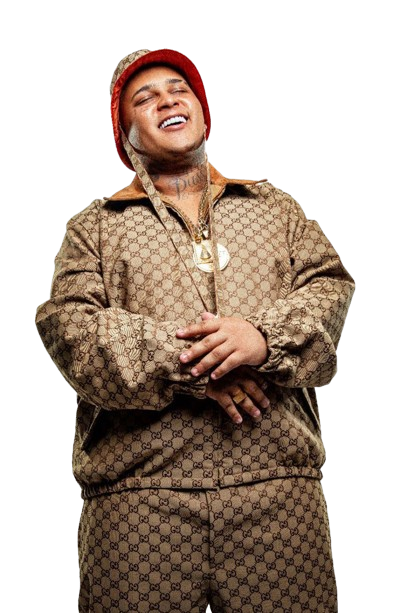
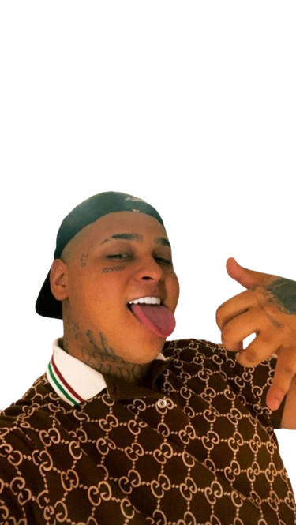
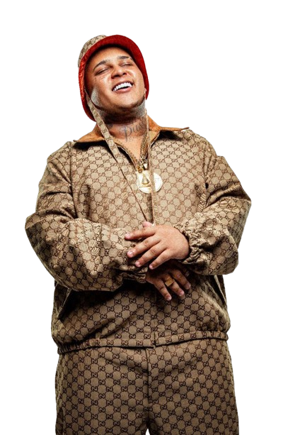
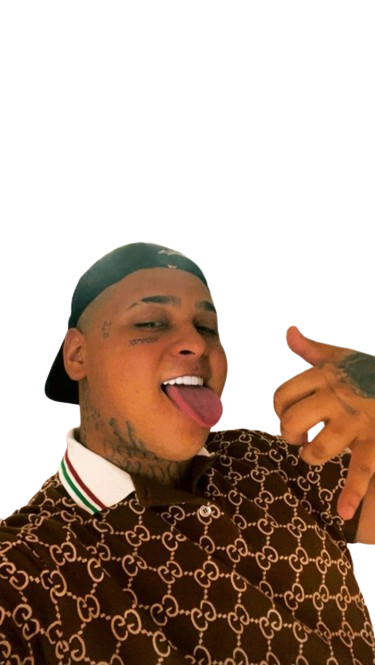
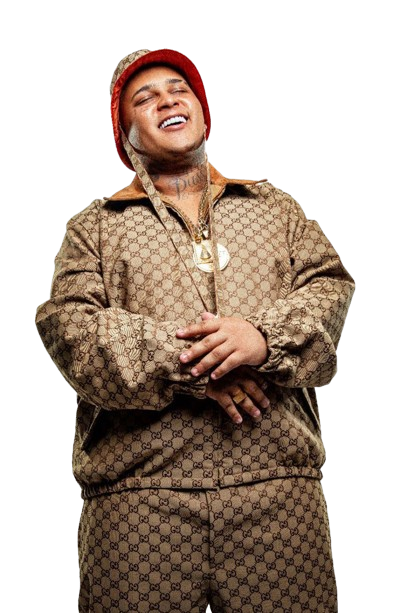
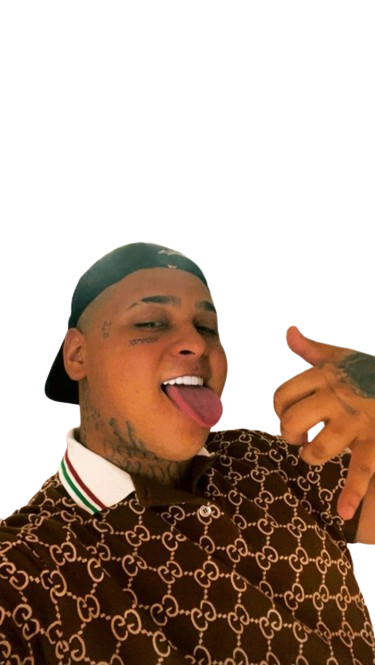
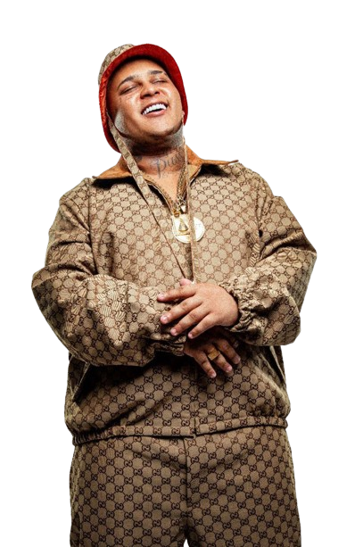
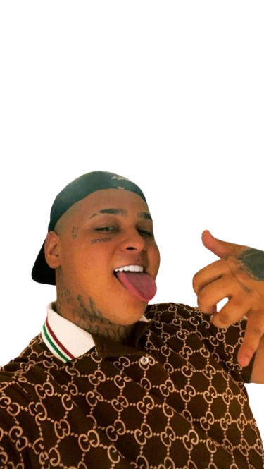

Ryan Santana dos Santos mais conhecido como Mc Ryan é um cantor de 22 anos, que ficou conhecido por seus
principais sucessos "Revoada Sem Você" e "Favela", com participações especiais de MC Kevin e Salvador da Rima.
Ele é o primeiro artista de funk contratado na gravadora Warner Music Group
Músicas de Mc Ryan Instagram do Mc Ryan